# Cargar librerías e instalar las que no estén instaladas
pacman::p_load(tidyverse, janitor)Notas de R
Introducción
Estas notas fueron realizadas con la finalidad de ser un recurso fundamental para el análisis de datos. Una guía que permita agilizar y tomar decisiones rápidas en cuanto a los procedimientos ideales para el procesamiento, análisis, inferencia y viasualización de datos en R.
Nota: Todos los recursos empleados en este documento son extraídos de notas de clases, páginas web y propios.
Análisis Exploratorio y Descriptivos
Uno de los pasos más importantes al realizar un análisis de datos, es explorar y describir los datos con los que se cuentan. En esta sección se revisará temas como: Datos faltantes, reemplazar valores, visualización de datos e incluso prubas no parámetricas.
Datos de clientes
La base de datos data_clientes contiene información de los clientes de una Cooperativa, se cuentan con 4117 registro y 11 columnas con variables que incluyen un identificador único, así como características sociodemográficas como la edad, el género y el estado civil. También recoge variables económicas como los ingresos anuales, el número de hijos, el número de tarjetas, la modalidad de pago, la tenencia de hipoteca y el número de préstamos activos. Finalmente, incluye la variable RIESGO, que clasifica a los clientes según su perfil crediticio, y puede ser utilizada como variable objetivo en modelos de predicción o segmentación.
# Cargar base de datos
data_clientes <- read.table("C:/Users/natal/Escritorio/Semestres/Semestre 10/Mineria/Data Clientes Cooperativa.txt",
sep= "\t", na= c("NA", "", " "), header=T)
# Revisar los primeros 6 registros de la base de datos
head(data_clientes) ID EDAD INGRESOS GENERO ESTADO_CIVIL NUM_HIJOS NUM_TARJETAS
1 100756 44 59944 m married 1 2
2 100668 35 59692 <NA> married 1 1
3 100418 34 59508 m married 1 1
4 100416 34 59463 m married 0 2
5 100590 39 59393 f married 0 2
6 100657 41 59276 m married 1 2
MODALIDAD_PAGO HIPOTECA PRESTAMOS RIESGO
1 monthly y 0 V
2 monthly y 0 F
3 monthly y 1 V
4 monthly y 1 F
5 monthly y 0 V
6 monthly y 1 V# Estructura de la base de datos
glimpse(data_clientes)Rows: 4,117
Columns: 11
$ ID <int> 100756, 100668, 100418, 100416, 100590, 100657, 100702,…
$ EDAD <int> 44, 35, 34, 34, 39, 41, 42, 31, 28, 30, 38, 36, 42, 44,…
$ INGRESOS <int> 59944, 59692, 59508, 59463, 59393, 59276, 59201, 59193,…
$ GENERO <chr> "m", NA, "m", "m", "f", "m", "m", "f", "m", "m", "m", "…
$ ESTADO_CIVIL <chr> "married", "married", "married", "married", "married", …
$ NUM_HIJOS <int> 1, 1, 1, 0, 0, 1, 0, 1, 1, 1, 0, 1, 0, 0, 0, 1, 0, 1, 1…
$ NUM_TARJETAS <int> 2, 1, 1, 2, 2, 2, 1, 2, 1, 1, 1, 1, 2, 1, 2, 1, 1, 2, 1…
$ MODALIDAD_PAGO <chr> "monthly", "monthly", "monthly", "monthly", "monthly", …
$ HIPOTECA <chr> "y", "y", "y", "y", "y", "y", "y", "y", "y", "y", "y", …
$ PRESTAMOS <int> 0, 0, 1, 1, 0, 1, 0, 1, 1, 1, 1, 0, 0, 0, 0, 0, 0, 1, 1…
$ RIESGO <chr> "V", "F", "V", "F", "V", "V", "V", "V", "F", "V", "F", …# Estadísticas descriptivas de las variables de la base de datos
summary(data_clientes) ID EDAD INGRESOS GENERO
Min. :100001 Min. :18.00 Min. :15005 Length:4117
1st Qu.:101030 1st Qu.:23.00 1st Qu.:20497 Class :character
Median :102059 Median :31.00 Median :23490 Mode :character
Mean :102059 Mean :31.82 Mean :25580
3rd Qu.:103088 3rd Qu.:41.00 3rd Qu.:27566
Max. :104117 Max. :50.00 Max. :59944
ESTADO_CIVIL NUM_HIJOS NUM_TARJETAS MODALIDAD_PAGO
Length:4117 Min. :0.000 Min. :0.000 Length:4117
Class :character 1st Qu.:1.000 1st Qu.:1.000 Class :character
Mode :character Median :1.000 Median :2.000 Mode :character
Mean :1.453 Mean :2.429
3rd Qu.:2.000 3rd Qu.:4.000
Max. :4.000 Max. :6.000
HIPOTECA PRESTAMOS RIESGO
Length:4117 Min. :0.000 Length:4117
Class :character 1st Qu.:1.000 Class :character
Mode :character Median :1.000 Mode :character
Mean :1.376
3rd Qu.:2.000
Max. :3.000 length(unique(data_clientes$ID)) #Devuelve el número de valores únicos en la variable ID[1] 4117Descripción de datos
Descripción de datos cuantitativos
Este código permite obtener información detallada de las estadísticas descriptivas para las variables numéricas, como el n, desviación estándar, IQR, etc. Esta información es mucho más completa que el summary().
variables.Num <- c("EDAD", "INGRESOS", "NUM_HIJOS", "NUM_TARJETAS", "PRESTAMOS")
# Tabla: Análisis descriptivo variables númericas
tabla_descrip.dt_clientes <- sapply(variables.Num, function(var){
x=data_clientes[[var]]
c(n= length(x),
media= round(mean(x, na.rm=T),2),
Desv.Est= round(sd(x, na.rm=T),2),
mediana= round(median(x, na.rm=T),2),
IQR= round(IQR(x, na.rm=T),2),
Percentil1= round(quantile(x, prob=0.25, na.rm=T),2),
Percentil2= round(quantile(x, prob=0.75, na.rm=T),2),
Percentil3= round(quantile(x, prob=0.95, na.rm=T),2))
})
tabla_descrip.dt_clientes EDAD INGRESOS NUM_HIJOS NUM_TARJETAS PRESTAMOS
n 4117.00 4117.00 4117.00 4117.00 4117.00
media 31.82 25580.21 1.45 2.43 1.38
Desv.Est 9.88 8766.87 1.17 1.88 0.84
mediana 31.00 23490.00 1.00 2.00 1.00
IQR 18.00 7069.00 1.00 3.00 1.00
Percentil1.25% 23.00 20497.00 1.00 1.00 1.00
Percentil2.75% 41.00 27566.00 2.00 4.00 2.00
Percentil3.95% 48.00 44773.80 4.00 6.00 3.00Descripción de datos cualitativos
Este código genera las frecuencias absolutas y relativas para todas las variables cualitativas a tráves de tabyl() y lapply(), este último comando se utiliza para aplicar una función a cada elemento de una lista o vector, devolviendo siempre el resultado como una lista.
variables.Cat <- c("GENERO", "ESTADO_CIVIL", "MODALIDAD_PAGO", "HIPOTECA", "RIESGO")
Frec_tablas.Cat <- lapply(variables.Cat, function(var) tabyl(data_clientes[[var]]))
names(Frec_tablas.Cat) <- variables.Cat
Frec_tablas.Cat$GENERO
data_clientes[[var]] n percent valid_percent
f 2077 0.5044935633 0.5046161
m 2039 0.4952635414 0.4953839
<NA> 1 0.0002428953 NA
$ESTADO_CIVIL
data_clientes[[var]] n percent
divsepwid 873 0.2120476
married 2089 0.5074083
single 1155 0.2805441
$MODALIDAD_PAGO
data_clientes[[var]] n percent
monthly 2026 0.4921059
weekly 2091 0.5078941
$HIPOTECA
data_clientes[[var]] n percent
n 917 0.222735
y 3200 0.777265
$RIESGO
data_clientes[[var]] n percent
F 3313 0.8047122
V 804 0.1952878Datos faltantes
La figura fig-MissData es muy útil para visualizar los datos faltantes por variable. En este caso hay muy pocos por lo que no se logran ver.
library(visdat)
#| label: fig-MissData
#| fig-cap: "Datos faltantes con vis_miss"
#| code-fold: true
vis_miss(data_clientes) 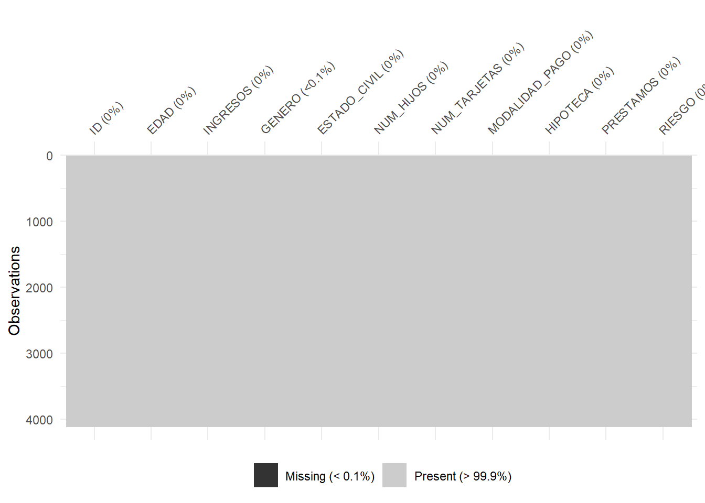
Por otro lado, dado que la idea es identificar cuáles son las variables que contienen NA’s se utiliza sapply() en vez de lapply() dado que la idea es que devuelva un vector en vez de una lista.
# Revisar si la base de datos contiene NA (contiene 1)
sum(is.na(data_clientes))[1] 1# Verificar en que columna se encuentra el NA
Na_columnas.dt_clientes <- sapply(dput(colnames(data_clientes)), function(var) sum(is.na(data_clientes[[var]])))c("ID", "EDAD", "INGRESOS", "GENERO", "ESTADO_CIVIL", "NUM_HIJOS",
"NUM_TARJETAS", "MODALIDAD_PAGO", "HIPOTECA", "PRESTAMOS", "RIESGO"
)Na_columnas.dt_clientes # Se encuentra en la variable GENERO ID EDAD INGRESOS GENERO ESTADO_CIVIL
0 0 0 1 0
NUM_HIJOS NUM_TARJETAS MODALIDAD_PAGO HIPOTECA PRESTAMOS
0 0 0 0 0
RIESGO
0 Modificar categorías de las variables
library(dplyr)
data_clientes <- data_clientes %>%
mutate(GENERO = dplyr::recode(GENERO, "f"= "Femenino", "m"= "Masculino"),
ESTADO_CIVIL = dplyr::recode(ESTADO_CIVIL, "divsepwid" = "Viudo/Divorciado",
"married" = "Casado", "single" = "Soltero"),
MODALIDAD_PAGO = dplyr::recode(MODALIDAD_PAGO, "monthly"= "Mensual",
"weekly" = "Semanal"),
HIPOTECA =dplyr::recode(HIPOTECA,"n"="NO", "y"="Si"),
RIESGO = dplyr::recode(RIESGO, "F"="Cumplimiento", "V"="Impago"))
# Revisar como quedaron las variables recodificadas
glimpse(data_clientes)Rows: 4,117
Columns: 11
$ ID <int> 100756, 100668, 100418, 100416, 100590, 100657, 100702,…
$ EDAD <int> 44, 35, 34, 34, 39, 41, 42, 31, 28, 30, 38, 36, 42, 44,…
$ INGRESOS <int> 59944, 59692, 59508, 59463, 59393, 59276, 59201, 59193,…
$ GENERO <chr> "Masculino", NA, "Masculino", "Masculino", "Femenino", …
$ ESTADO_CIVIL <chr> "Casado", "Casado", "Casado", "Casado", "Casado", "Casa…
$ NUM_HIJOS <int> 1, 1, 1, 0, 0, 1, 0, 1, 1, 1, 0, 1, 0, 0, 0, 1, 0, 1, 1…
$ NUM_TARJETAS <int> 2, 1, 1, 2, 2, 2, 1, 2, 1, 1, 1, 1, 2, 1, 2, 1, 1, 2, 1…
$ MODALIDAD_PAGO <chr> "Mensual", "Mensual", "Mensual", "Mensual", "Mensual", …
$ HIPOTECA <chr> "Si", "Si", "Si", "Si", "Si", "Si", "Si", "Si", "Si", "…
$ PRESTAMOS <int> 0, 0, 1, 1, 0, 1, 0, 1, 1, 1, 1, 0, 0, 0, 0, 0, 0, 1, 1…
$ RIESGO <chr> "Impago", "Cumplimiento", "Impago", "Cumplimiento", "Im…Pruebas No paramétricas
La pruebas parámétricas son esenciales cuando se quiere realizar análisis bivariados sin asumir una distribución específica de los datos queu generalemnte es la normalidad. Existen varias pruebas para realizar inferencias respecto a las relaciones, sin embargo hay ciertas condiciones que se deben tener en cuenta como lo muestra la siguiente tabla:
| Tipo de Variables Comparadas | Condición | Prueba Estadística |
|---|---|---|
| 2 variables numéricas | Distribución normal | Correlación de Pearson |
| No normal | Correlación de Spearman | |
| 1 variable numérica + 1 categórica | Distribución normal | 2 categorías: t de Student |
| >2 categorías: ANOVA | ||
| No normal | 2 categorías: U de Mann-Whitney | |
| >2 categorías: Kruskal-Wallis | ||
| 2 variables categóricas | Tabla 2x2 | Test de Fisher |
| Tabla r x s (>2 categorías) | Chi-cuadrado (χ²) |
Evaluar normalidad
La prueba de Shapiro-Wilk se utiliza para evualar la normalidad de una variable, el comando es shapiro.test().
(H₀): Los datos provienen de una distribución normal.
(H₁): Los datos no provienen de una distribución normal.
Interpretación del p-valor:
Si p > 0.05: no se rechaza H₀ → los datos son compatibles con una distribución normal.
Si p ≤ 0.05: se rechaza H₀ → los datos no siguen una distribución normal.
Norm_tablas.Num <- lapply(variables.Num, function(var) shapiro.test(data_clientes[[var]]))
names(Norm_tablas.Num) <- variables.Num
Norm_tablas.Num # Ninguna variable sigue una distribución normal$EDAD
Shapiro-Wilk normality test
data: data_clientes[[var]]
W = 0.91622, p-value < 2.2e-16
$INGRESOS
Shapiro-Wilk normality test
data: data_clientes[[var]]
W = 0.82675, p-value < 2.2e-16
$NUM_HIJOS
Shapiro-Wilk normality test
data: data_clientes[[var]]
W = 0.88775, p-value < 2.2e-16
$NUM_TARJETAS
Shapiro-Wilk normality test
data: data_clientes[[var]]
W = 0.88518, p-value < 2.2e-16
$PRESTAMOS
Shapiro-Wilk normality test
data: data_clientes[[var]]
W = 0.86204, p-value < 2.2e-16Correlación
Es una medida estadística que indica la fuerza y dirección de una relación lineal entre dos variables cuantitativas.El resultado se encuentra en un rango entre [-1,1]. -1 : Correlación negativa perfecta (una variable sube y otra baja) 0: No hay correlación 1: Correlación positiva perfecta (ambas variables aumentan o disminuyen juntas)
library(corrplot)corrplot 0.92 loadedcor(data_clientes$INGRESOS, data_clientes$EDAD, method = "spearman")[1] 0.3568635# Correlación entre las variables numéricas ------------------------------------
# Matriz de correlación
Matriz_cor <- cor(data_clientes[variables.Num], #Dataframe con las variables numéricas de interés
use = "complete.obs", #Utiliza solo filas con datos completos, es como un na.rm =T
method = "spearman") #Método a utilizar: Spearman, Pearson, etc.
# Gráfico de correlación
corrplot(Matriz_cor, #Matriz de correlación previamente calculada
method = "color", #Agregar color para identificar la intensidad de la correlación
type = "upper", #Visualizar solo el triangulo superior
addCoef.col = T) #Añadir los valores de la autocorrelación en color negro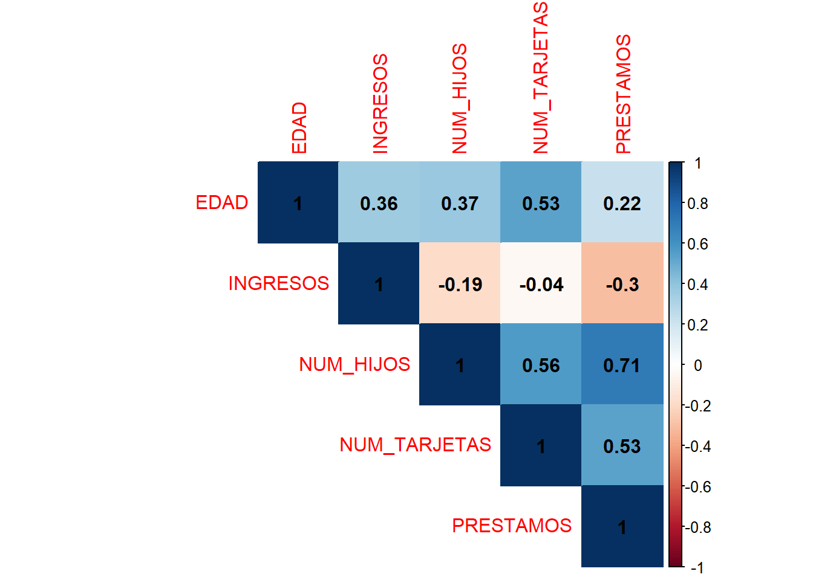
U de Mann-Whitney
Esta prueba evalúa si hay diferencia entre las medianas de los grupos.El comando difiere al nombre ya que es wilcox.test().
(H₀): La mediana de los grupos son iguales.
(H₁): La mediana de los grupos son diferentes.
Si p ≤ 0.05: se rechaza H₀ → Hay diferencia en las medianas de los grupos.
wilcox.test(INGRESOS~GENERO, # Formula, como en un modelo logistico simple
data = data_clientes) #datos
Wilcoxon rank sum test with continuity correction
data: INGRESOS by GENERO
W = 2088984, p-value = 0.4544
alternative hypothesis: true location shift is not equal to 0Otros
Para T-Student y ANOVA se evalúa la diferencia entre las medias de los grupos. Parael test de Kruskall Wallis la diferencia entre las medianas de los grupos. Para el Test de fisher y Chi-cuadrado se evalúa la indepencia. Siempre se busca rechazar la Hiótesis nula, es decir, p ≤ 0.05.
T-Student: t.test() ANOVA: aov(). Antes se evalúa la homogeneidad de varianzas con bartlett.test(). Kruskal Wallis: kruskal.test() Test de fisher: fisher.test() Chi-cuadrado: chisq.test(). Tiene supuesto de valor esperado.
Visualización de datos
Gráfico de barras
#| label: fig-barras
#| fig-cap: "Gráfico de barras"
ggplot(data_clientes, # Dataframe que incluye la variable
aes(x=ESTADO_CIVIL, # Variable que quiero graficar (Se grafica el conteo)
fill=ESTADO_CIVIL)) + #fill agrega color a cada categoría (colores predeterminados)
geom_bar() + #Función que establece el tipo de gráfico
geom_text(aes(label = ..count..), # Texto que se mostrará
stat = "count", # Cómo calcular el valor Conteo de observaciones
vjust=2, # Ubicación del valor
color= "white") + # Color del texto o label
scale_fill_manual(values = c("#1C86EE", "#458B00", "#EE1289")) + # Personalizar colores, fill debe estar arriba
scale_x_discrete(limits = c("Soltero", "Casado", "Viudo/Divorciado")) + # Personalizar el orden de la variable x
theme(legend.position = "right", axis.title.x = element_blank()) + #Agregar la leyenda al lado derecho y eliminar título eje y
labs(title = "Conteo de la variable Estado civil por categoría", x = " Estado civil",
y = "Conteo (Frecuencia absoluta)") + # Agregar título y modificar nombres de los ejes
guides(fill = guide_legend(title="Estado Civil")) # Modificar título de la leyendaWarning: The dot-dot notation (`..count..`) was deprecated in ggplot2 3.4.0.
ℹ Please use `after_stat(count)` instead.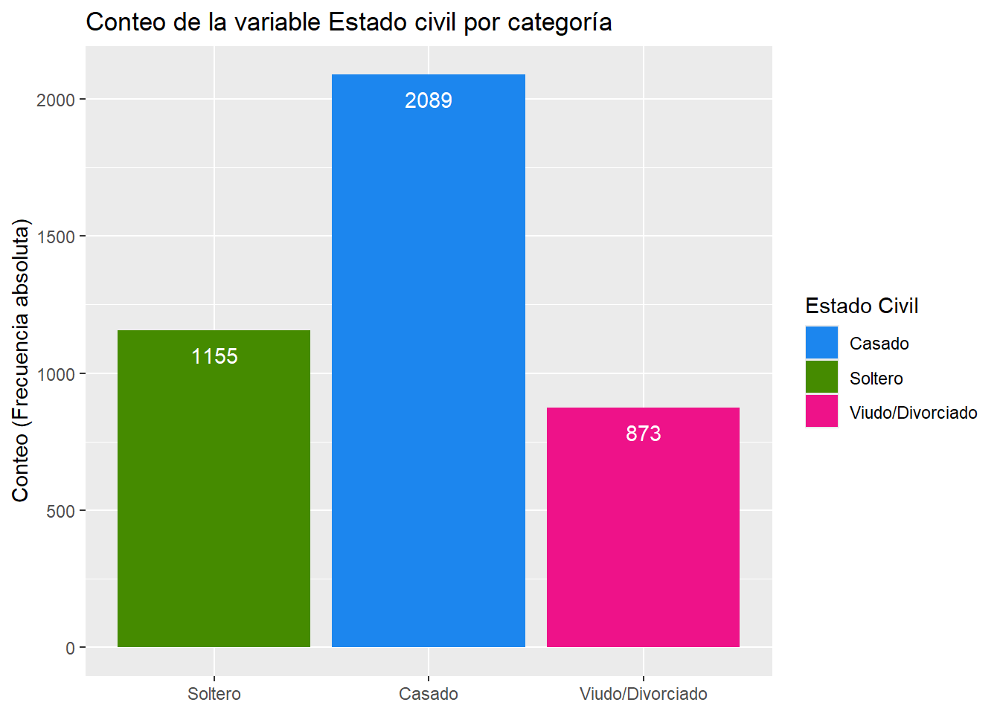
Boxplot
ggplot(data_clientes, aes(x = GENERO, y= INGRESOS)) +
stat_boxplot(geom = "errorbar",
width= 0.25) +
geom_boxplot(alpha=0.5,
fill="#1C86EE",
colour= "black",
outlier.colour = "#87CEFA") +
scale_x_discrete(limits= c("Femenino", "Masculino")) +
labs(title = "Gráfico de cajas: Ingresos por Género", x="Género", y="Ingresos")Warning: Removed 1 row containing missing values or values outside the scale range
(`stat_boxplot()`).
Removed 1 row containing missing values or values outside the scale range
(`stat_boxplot()`).
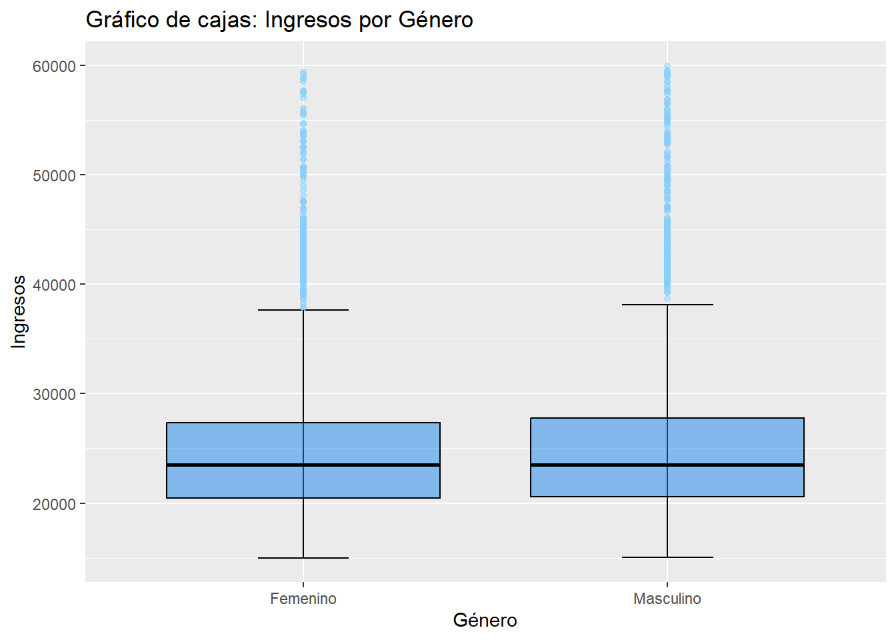
Dispersión
#| label: fig-dispersion
#| fig-cap: "Gráfico de Dispersión"
ggplot(data_clientes, aes(x=EDAD, y=INGRESOS)) +
geom_point(alpha=0.2) + #Agregar transparencia para que se vea menos denso
labs(title="Edad vs Ingresos", x="Edad", y="Ingresos")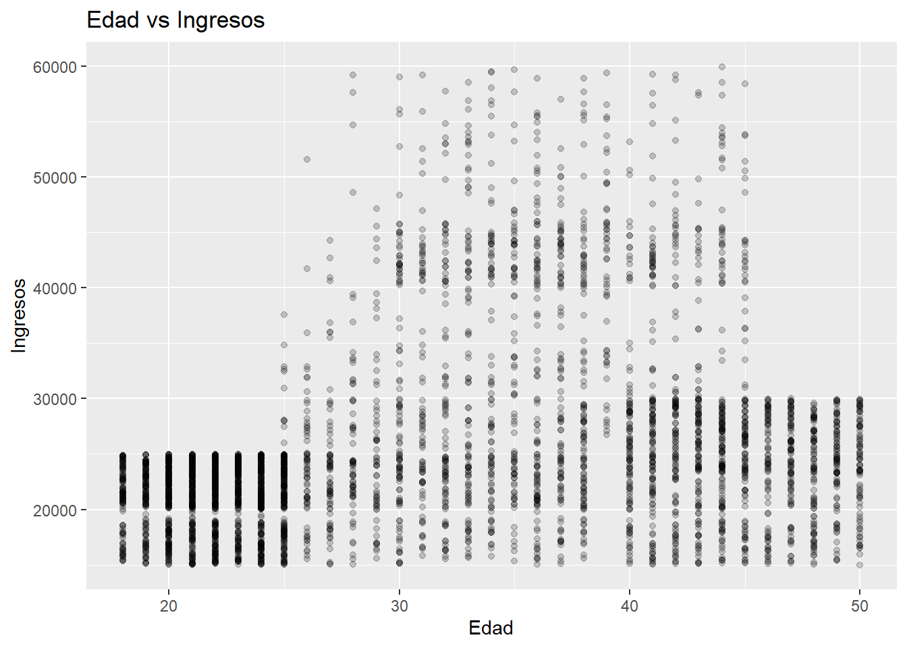
data_clientes.Edad_Ingr <- data_clientes %>%
select(EDAD, INGRESOS) %>%
group_by(EDAD) %>%
summarize(media_Ingresos = mean(INGRESOS, na.rm=T))
ggplot(data_clientes.Edad_Ingr, aes(x=EDAD, y=media_Ingresos)) +
geom_line(color="red") +
labs(title="Media de los Ingresos por Edad", x="Edad", y="Media de los Ingresos") 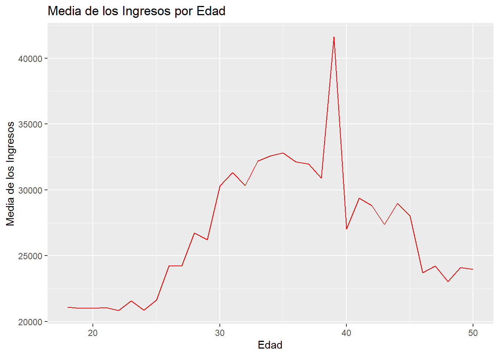
Mosaico
#| label: fig-Mosaico
#| fig-cap: "Gráfico de Mosaico"
library(ggmosaic)Warning: package 'ggmosaic' was built under R version 4.4.3ggplot(data_clientes) +
geom_mosaic(aes(x=product(RIESGO) , fill=ESTADO_CIVIL)) +
scale_fill_manual(values =c("#1C86EE", "#458B00", "#EE1289")) +
labs(title = "Gráfico Mosaico: Riesgo vs Estado Civil", y= "Estado Civil",
x="Riesgo") +
guides(fill=guide_legend(title= "Estado Civil"))Warning: The `scale_name` argument of `continuous_scale()` is deprecated as of ggplot2
3.5.0.Warning: The `trans` argument of `continuous_scale()` is deprecated as of ggplot2 3.5.0.
ℹ Please use the `transform` argument instead.Warning: `unite_()` was deprecated in tidyr 1.2.0.
ℹ Please use `unite()` instead.
ℹ The deprecated feature was likely used in the ggmosaic package.
Please report the issue at <https://github.com/haleyjeppson/ggmosaic>.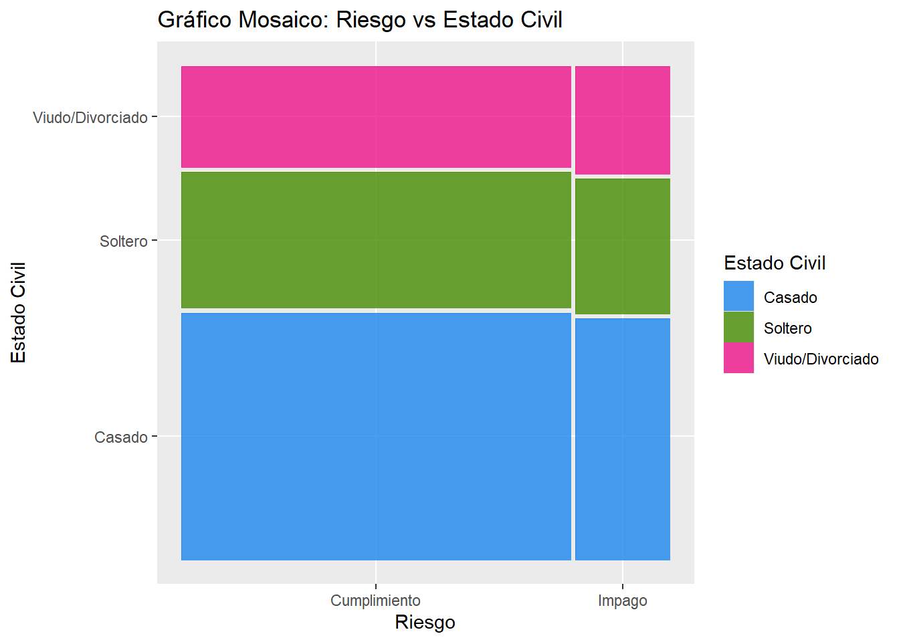
Tablas gtsummary
Tablas univariadas
library(gtsummary)
data_clientes %>% # datos
dplyr::select(GENERO, ESTADO_CIVIL, MODALIDAD_PAGO, HIPOTECA, RIESGO) %>% # se seleccionan las variables que se van a tabular, incluyendo la variable a estratificar
gtsummary::tbl_summary(
by = NULL, # nombre variable a estratificar
missing = "always", # incluye fila de conteo NA para todas las variables, no se incluye el porcentaje
missing_text = "(Missing)", # nombre que identifica el recuento de observaciones faltantes
statistic = list(all_continuous() ~ "{median} ({p25}, {p75})"), # especificar segun test de normalidad, en caso de no rechazar Ho~normalidad se especificaría: list(all_continuous() ~ "{mean} ({sd})")
digits = list(all_categorical() ~ c(0, 1), # (0) sin decimal la frecuencia absoluta, y (1) decimal la frecuencia relativa
all_continuous() ~ c(1, 1))) %>% # (0) sin decimal la mediana o media, y (1) decimal la desv estandar o IQR
gtsummary::add_n() %>%
gtsummary::bold_labels() # etiquetas o niveles en negrita| Characteristic | N | N = 4,1171 |
|---|---|---|
| GENERO | 4,116 | |
| Femenino | 2,077 (50.5%) | |
| Masculino | 2,039 (49.5%) | |
| (Missing) | 1 | |
| ESTADO_CIVIL | 4,117 | |
| Casado | 2,089 (50.7%) | |
| Soltero | 1,155 (28.1%) | |
| Viudo/Divorciado | 873 (21.2%) | |
| (Missing) | 0 | |
| MODALIDAD_PAGO | 4,117 | |
| Mensual | 2,026 (49.2%) | |
| Semanal | 2,091 (50.8%) | |
| (Missing) | 0 | |
| HIPOTECA | 4,117 | |
| NO | 917 (22.3%) | |
| Si | 3,200 (77.7%) | |
| (Missing) | 0 | |
| RIESGO | 4,117 | |
| Cumplimiento | 3,313 (80.5%) | |
| Impago | 804 (19.5%) | |
| (Missing) | 0 | |
| 1 n (%) | ||
Tablas bivariadas
library(gtsummary)
data_clientes %>% # datos
dplyr::select(GENERO, ESTADO_CIVIL, MODALIDAD_PAGO, HIPOTECA, RIESGO) %>% # se seleccionan las variables que se van a tabular, incluyendo la variable a estratificar
gtsummary::tbl_summary(
by = RIESGO, # nombre variable a estratificar
missing = "always", # incluye fila de conteo NA para todas las variables, no se incluye el porcentaje
missing_text = "(Missing)", # nombre que identifica el recuento de observaciones faltantes
statistic = list(all_continuous() ~ "{median} ({p25}, {p75})"), # especificar segun test de normalidad, en caso de no rechazar Ho~normalidad se especificaría: list(all_continuous() ~ "{mean} ({sd})")
digits = list(all_categorical() ~ c(0, 1), # (0) sin decimal la frecuencia absoluta, y (1) decimal la frecuencia relativa
all_continuous() ~ c(1, 1))) %>% # (0) sin decimal la mediana o media, y (1) decimal la desv estandar o IQR
gtsummary::add_n() %>%
gtsummary::add_overall() %>%
gtsummary::modify_spanning_header(all_stat_cols() ~ "**Chemotherapy Treatment**") %>% # agregar encabezado
gtsummary::bold_labels() # etiquetas o niveles en negrita | Characteristic | N | Chemotherapy Treatment | ||
|---|---|---|---|---|
| Overall, N = 4,1171 | Cumplimiento, N = 3,3131 | Impago, N = 8041 | ||
| GENERO | 4,116 | |||
| Femenino | 2,077 (50.5%) | 1,676 (50.6%) | 401 (49.9%) | |
| Masculino | 2,039 (49.5%) | 1,636 (49.4%) | 403 (50.1%) | |
| (Missing) | 1 | 1 | 0 | |
| ESTADO_CIVIL | 4,117 | |||
| Casado | 2,089 (50.7%) | 1,689 (51.0%) | 400 (49.8%) | |
| Soltero | 1,155 (28.1%) | 930 (28.1%) | 225 (28.0%) | |
| Viudo/Divorciado | 873 (21.2%) | 694 (20.9%) | 179 (22.3%) | |
| (Missing) | 0 | 0 | 0 | |
| MODALIDAD_PAGO | 4,117 | |||
| Mensual | 2,026 (49.2%) | 1,449 (43.7%) | 577 (71.8%) | |
| Semanal | 2,091 (50.8%) | 1,864 (56.3%) | 227 (28.2%) | |
| (Missing) | 0 | 0 | 0 | |
| HIPOTECA | 4,117 | |||
| NO | 917 (22.3%) | 812 (24.5%) | 105 (13.1%) | |
| Si | 3,200 (77.7%) | 2,501 (75.5%) | 699 (86.9%) | |
| (Missing) | 0 | 0 | 0 | |
| 1 n (%) | ||||
Tablas bivariadas con valores p
library(gtsummary)
data_clientes %>% # datos
dplyr::select(GENERO, ESTADO_CIVIL, MODALIDAD_PAGO, HIPOTECA, RIESGO) %>% # se seleccionan las variables que se van a tabular, incluyendo la variable a estratificar
gtsummary::tbl_summary(
by = RIESGO, # nombre variable a estratificar
missing = "always", # incluye fila de conteo NA para todas las variables, no se incluye el porcentaje
missing_text = "(Missing)", # nombre que identifica el recuento de observaciones faltantes
statistic = list(all_continuous() ~ "{median} ({p25}, {p75})"), # especificar segun test de normalidad, en caso de no rechazar Ho~normalidad se especificaría: list(all_continuous() ~ "{mean} ({sd})")
digits = list(all_categorical() ~ c(0, 1), # (0) sin decimal la frecuencia absoluta, y (1) decimal la frecuencia relativa
all_continuous() ~ c(1, 1))) %>% # (0) sin decimal la mediana o media, y (1) decimal la desv estandar o IQR
gtsummary::add_n() %>%
gtsummary::add_overall() %>%
gtsummary::add_p(list(all_continuous() ~ "wilcox.test", # test no parametrico variables numericas
all_categorical() ~ "chisq.test")) %>% # test variables categoricas
gtsummary::bold_p(t=0.05) %>% # valores p significativos en negrita
gtsummary::modify_spanning_header(all_stat_cols() ~ "**Chemotherapy Treatment**") %>% # agregar encabezado
gtsummary::modify_header(update = list(label ~ "**Variable**",
p.value ~ "***valor p***")) %>% # modificar encabezado, tanto el nombre como el estilo (***cursiva***, **negrita**)
gtsummary::bold_labels() %>% # etiquetas o niveles en negrita
gtsummary::modify_footnote( # notas al pie (queda a su opcion)
update = list(
all_stat_cols() ~ "Median (IQR); n (%)",
p.value ~ "Wilcoxon rank sum test; Pearson's Chi-squared test")
) | Variable | N | Chemotherapy Treatment | valor p2 | ||
|---|---|---|---|---|---|
| Overall, N = 4,1171 | Cumplimiento, N = 3,3131 | Impago, N = 8041 | |||
| GENERO | 4,116 | 0.7 | |||
| Femenino | 2,077 (50.5%) | 1,676 (50.6%) | 401 (49.9%) | ||
| Masculino | 2,039 (49.5%) | 1,636 (49.4%) | 403 (50.1%) | ||
| (Missing) | 1 | 1 | 0 | ||
| ESTADO_CIVIL | 4,117 | 0.7 | |||
| Casado | 2,089 (50.7%) | 1,689 (51.0%) | 400 (49.8%) | ||
| Soltero | 1,155 (28.1%) | 930 (28.1%) | 225 (28.0%) | ||
| Viudo/Divorciado | 873 (21.2%) | 694 (20.9%) | 179 (22.3%) | ||
| (Missing) | 0 | 0 | 0 | ||
| MODALIDAD_PAGO | 4,117 | <0.001 | |||
| Mensual | 2,026 (49.2%) | 1,449 (43.7%) | 577 (71.8%) | ||
| Semanal | 2,091 (50.8%) | 1,864 (56.3%) | 227 (28.2%) | ||
| (Missing) | 0 | 0 | 0 | ||
| HIPOTECA | 4,117 | <0.001 | |||
| NO | 917 (22.3%) | 812 (24.5%) | 105 (13.1%) | ||
| Si | 3,200 (77.7%) | 2,501 (75.5%) | 699 (86.9%) | ||
| (Missing) | 0 | 0 | 0 | ||
| 1 Median (IQR); n (%) | |||||
| 2 Wilcoxon rank sum test; Pearson’s Chi-squared test | |||||
Modelos
Modelo Líneal simple
#Modelo lineal simple
model.Lsimple <- lm(INGRESOS~RIESGO, data=data_clientes)
summary(model.Lsimple)
Call:
lm(formula = INGRESOS ~ RIESGO, data = data_clientes)
Residuals:
Min 1Q Median 3Q Max
-19078 -4886 -835 1773 36185
Coefficients:
Estimate Std. Error t value Pr(>|t|)
(Intercept) 23507.1 133.6 175.91 <2e-16 ***
RIESGOImpago 10615.8 302.4 35.11 <2e-16 ***
---
Signif. codes: 0 '***' 0.001 '**' 0.01 '*' 0.05 '.' 0.1 ' ' 1
Residual standard error: 7691 on 4115 degrees of freedom
Multiple R-squared: 0.2305, Adjusted R-squared: 0.2303
F-statistic: 1233 on 1 and 4115 DF, p-value: < 2.2e-16Modelo Líneal múltiple
library(car)Cargando paquete requerido: carData
Adjuntando el paquete: 'car'The following object is masked from 'package:dplyr':
recodeThe following object is masked from 'package:purrr':
somelibrary(lmtest)Cargando paquete requerido: zoo
Adjuntando el paquete: 'zoo'The following objects are masked from 'package:base':
as.Date, as.Date.numeric#Modelo lineal múltiple
model.Lmultiple <- lm(INGRESOS~., data=subset(data_clientes, select = -ID))
summary(model.Lmultiple)
Call:
lm(formula = INGRESOS ~ ., data = subset(data_clientes, select = -ID))
Residuals:
Min 1Q Median 3Q Max
-20966.4 -3783.0 -164.1 3493.7 29467.3
Coefficients:
Estimate Std. Error t value Pr(>|t|)
(Intercept) 29705.1 579.6 51.246 < 2e-16 ***
EDAD 267.7 13.2 20.274 < 2e-16 ***
GENEROMasculino 487.9 182.0 2.681 0.00738 **
ESTADO_CIVILSoltero -8680.1 288.7 -30.068 < 2e-16 ***
ESTADO_CIVILViudo/Divorciado 3569.1 495.9 7.198 7.24e-13 ***
NUM_HIJOS -3088.4 137.1 -22.523 < 2e-16 ***
NUM_TARJETAS 126.5 101.8 1.242 0.21414
MODALIDAD_PAGOSemanal -2766.8 227.5 -12.162 < 2e-16 ***
HIPOTECASi -783.4 268.9 -2.913 0.00360 **
PRESTAMOS -4231.6 191.9 -22.049 < 2e-16 ***
RIESGOImpago 4108.3 268.4 15.307 < 2e-16 ***
---
Signif. codes: 0 '***' 0.001 '**' 0.01 '*' 0.05 '.' 0.1 ' ' 1
Residual standard error: 5836 on 4105 degrees of freedom
(1 observation deleted due to missingness)
Multiple R-squared: 0.5565, Adjusted R-squared: 0.5554
F-statistic: 515 on 10 and 4105 DF, p-value: < 2.2e-16# Evaluación de supuestos
# Normalidad de los residuos
hist(resid(model.Lmultiple))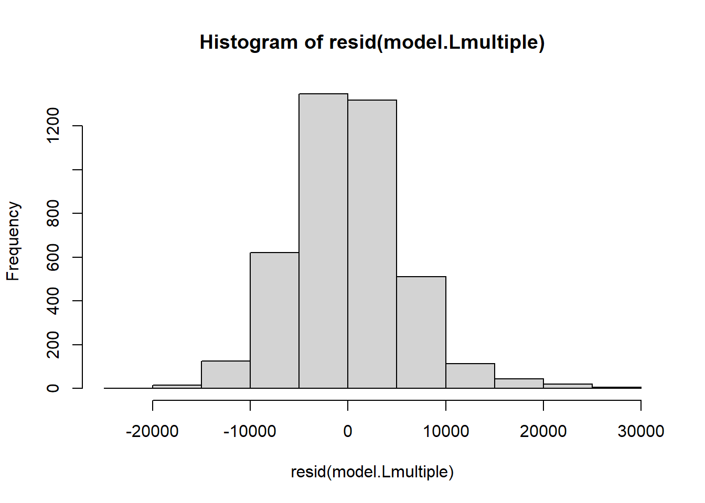
shapiro.test(resid(model.Lmultiple))
Shapiro-Wilk normality test
data: resid(model.Lmultiple)
W = 0.98208, p-value < 2.2e-16#Independencia de los residuos
durbinWatsonTest(model.Lmultiple) lag Autocorrelation D-W Statistic p-value
1 0.5497109 0.8976777 0
Alternative hypothesis: rho != 0#Homocedasticidad
bptest(model.Lmultiple)
studentized Breusch-Pagan test
data: model.Lmultiple
BP = 430.55, df = 10, p-value < 2.2e-16# Supuesto de linealidad
plot(model.Lmultiple, wich=1)Warning in plot.window(...): "wich" es un parámetro gráfico inválidoWarning in plot.xy(xy, type, ...): "wich" es un parámetro gráfico inválidoWarning in axis(side = side, at = at, labels = labels, ...): "wich" es un
parámetro gráfico inválido
Warning in axis(side = side, at = at, labels = labels, ...): "wich" es un
parámetro gráfico inválidoWarning in box(...): "wich" es un parámetro gráfico inválidoWarning in title(...): "wich" es un parámetro gráfico inválidoWarning in plot.xy(xy.coords(x, y), type = type, ...): "wich" es un parámetro
gráfico inválidoWarning in title(sub = sub.caption, ...): "wich" es un parámetro gráfico
inválido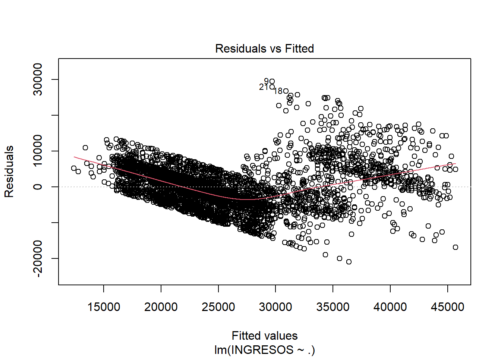
Warning in plot.window(...): "wich" es un parámetro gráfico inválidoWarning in plot.xy(xy, type, ...): "wich" es un parámetro gráfico inválidoWarning in axis(side = side, at = at, labels = labels, ...): "wich" es un
parámetro gráfico inválido
Warning in axis(side = side, at = at, labels = labels, ...): "wich" es un
parámetro gráfico inválidoWarning in box(...): "wich" es un parámetro gráfico inválidoWarning in title(...): "wich" es un parámetro gráfico inválidoWarning in title(sub = sub.caption, ...): "wich" es un parámetro gráfico
inválido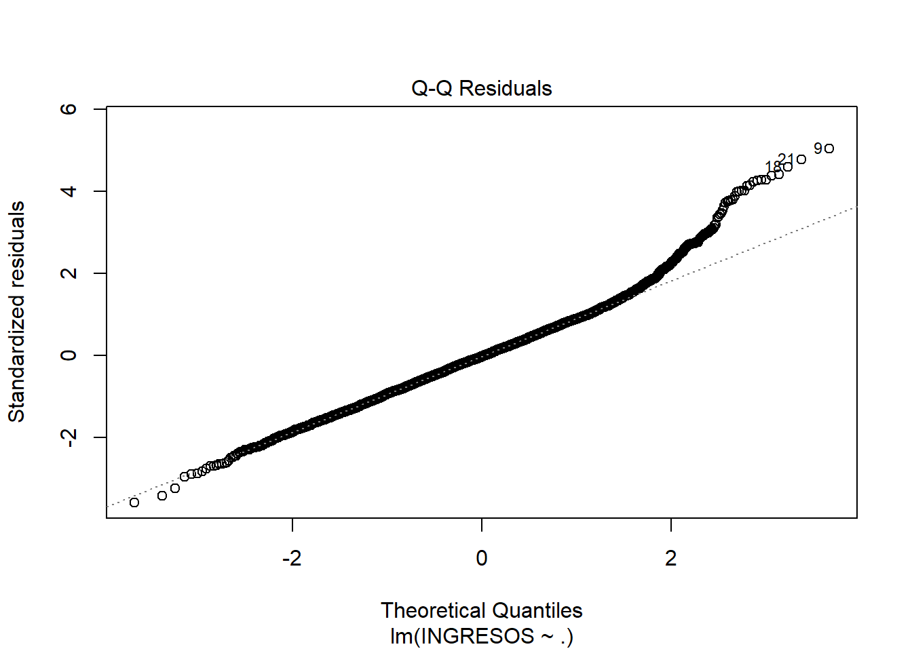
Warning in plot.window(...): "wich" es un parámetro gráfico inválidoWarning in plot.xy(xy, type, ...): "wich" es un parámetro gráfico inválidoWarning in axis(side = side, at = at, labels = labels, ...): "wich" es un
parámetro gráfico inválido
Warning in axis(side = side, at = at, labels = labels, ...): "wich" es un
parámetro gráfico inválidoWarning in box(...): "wich" es un parámetro gráfico inválidoWarning in title(...): "wich" es un parámetro gráfico inválidoWarning in plot.xy(xy.coords(x, y), type = type, ...): "wich" es un parámetro
gráfico inválidoWarning in title(sub = sub.caption, ...): "wich" es un parámetro gráfico
inválido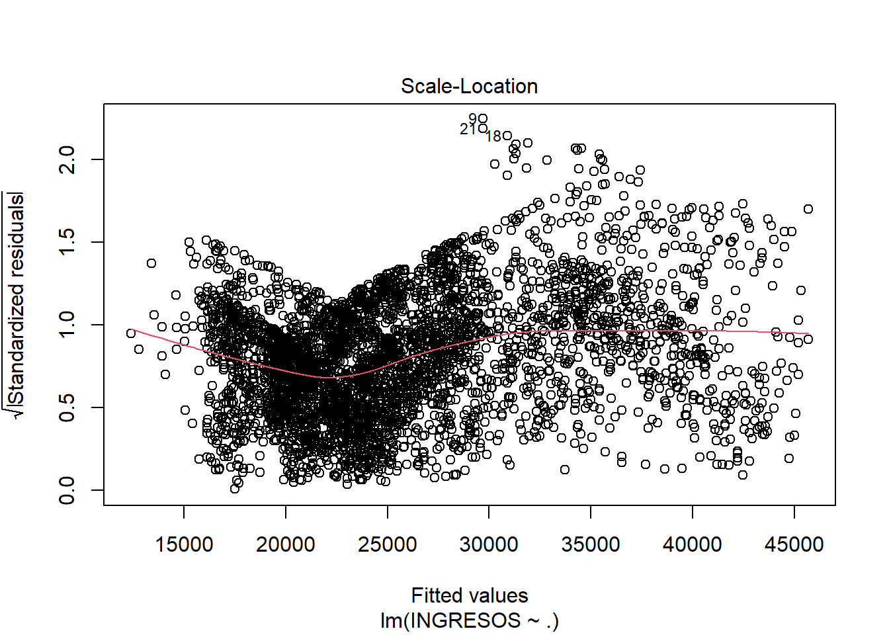
Warning in plot.window(...): "wich" es un parámetro gráfico inválidoWarning in plot.xy(xy, type, ...): "wich" es un parámetro gráfico inválidoWarning in axis(side = side, at = at, labels = labels, ...): "wich" es un
parámetro gráfico inválido
Warning in axis(side = side, at = at, labels = labels, ...): "wich" es un
parámetro gráfico inválidoWarning in box(...): "wich" es un parámetro gráfico inválidoWarning in title(...): "wich" es un parámetro gráfico inválidoWarning in plot.xy(xy.coords(x, y), type = type, ...): "wich" es un parámetro
gráfico inválidoWarning in title(sub = sub.caption, ...): "wich" es un parámetro gráfico
inválido
#Ausencia de multicolinealidad
vif(model.Lmultiple) GVIF Df GVIF^(1/(2*Df))
EDAD 2.055511 1 1.433705
GENERO 1.000704 1 1.000352
ESTADO_CIVIL 9.037144 2 1.733835
NUM_HIJOS 3.113940 1 1.764636
NUM_TARJETAS 4.430928 1 2.104977
MODALIDAD_PAGO 1.563332 1 1.250333
HIPOTECA 1.513750 1 1.230346
PRESTAMOS 3.125541 1 1.767920
RIESGO 1.368491 1 1.169825Modelo Logístico
options(scipen = 999)
data_clientes$RIESGO_bin <- ifelse(data_clientes$RIESGO == "V", 1, 0)
modelo.logit <- glm(RIESGO_bin ~. ,
data = subset(data_clientes, select= -ID),
family = binomial)Warning: glm.fit: algorithm did not convergelibrary(Epi)
summary(modelo.logit)
Call:
glm(formula = RIESGO_bin ~ ., family = binomial, data = subset(data_clientes,
select = -ID))
Coefficients:
Estimate
(Intercept) -26.56606852354313019760
EDAD 0.00000000000000377462
INGRESOS -0.00000000000000004982
GENEROMasculino -0.00000000000017274949
ESTADO_CIVILSoltero -0.00000000000012194373
ESTADO_CIVILViudo/Divorciado 0.00000000000043157835
NUM_HIJOS -0.00000000000017836953
NUM_TARJETAS -0.00000000000004034166
MODALIDAD_PAGOSemanal -0.00000000000012516562
HIPOTECASi 0.00000000000007230869
PRESTAMOS 0.00000000000005453260
RIESGOImpago -0.00000000000012061717
Std. Error z value Pr(>|z|)
(Intercept) 45296.74856469828955596313 -0.001 1
EDAD 845.15799632907771865575 0.000 1
INGRESOS 0.95247389402624604848 0.000 1
GENEROMasculino 11115.89810978742571023759 0.000 1
ESTADO_CIVILSoltero 19460.25179181103885639459 0.000 1
ESTADO_CIVILViudo/Divorciado 30450.42116368264760239981 0.000 1
NUM_HIJOS 8870.07570256622602755670 0.000 1
NUM_TARJETAS 6214.39177559506970283110 0.000 1
MODALIDAD_PAGOSemanal 14130.64339357041353650857 0.000 1
HIPOTECASi 16429.43340504031584714539 0.000 1
PRESTAMOS 12386.07101755217627214734 0.000 1
RIESGOImpago 16839.91498738039808813483 0.000 1
(Dispersion parameter for binomial family taken to be 1)
Null deviance: 0.000000000000 on 4115 degrees of freedom
Residual deviance: 0.000000023879 on 4104 degrees of freedom
(1 observation deleted due to missingness)
AIC: 24
Number of Fisher Scoring iterations: 25ci.lin(modelo.logit, Exp=TRUE) Estimate StdErr
(Intercept) -26.56606852354313019759502 45296.7485647
EDAD 0.00000000000000377462078 845.1579963
INGRESOS -0.00000000000000004981523 0.9524739
GENEROMasculino -0.00000000000017274949470 11115.8981098
ESTADO_CIVILSoltero -0.00000000000012194372846 19460.2517918
ESTADO_CIVILViudo/Divorciado 0.00000000000043157834793 30450.4211637
NUM_HIJOS -0.00000000000017836952571 8870.0757026
NUM_TARJETAS -0.00000000000004034166225 6214.3917756
MODALIDAD_PAGOSemanal -0.00000000000012516562006 14130.6433936
HIPOTECASi 0.00000000000007230868726 16429.4334050
PRESTAMOS 0.00000000000005453260240 12386.0710176
RIESGOImpago -0.00000000000012061717258 16839.9149874
z P
(Intercept) -0.000586489524421344716847 0.999532
EDAD 0.000000000000000004466172 1.000000
INGRESOS -0.000000000000000052300888 1.000000
GENEROMasculino -0.000000000000000015540759 1.000000
ESTADO_CIVILSoltero -0.000000000000000006266298 1.000000
ESTADO_CIVILViudo/Divorciado 0.000000000000000014173149 1.000000
NUM_HIJOS -0.000000000000000020109132 1.000000
NUM_TARJETAS -0.000000000000000006491651 1.000000
MODALIDAD_PAGOSemanal -0.000000000000000008857744 1.000000
HIPOTECASi 0.000000000000000004401167 1.000000
PRESTAMOS 0.000000000000000004402736 1.000000
RIESGOImpago -0.000000000000000007162576 1.000000
exp(Est.) 2.5% 97.5%
(Intercept) 0.000000000002900701 0.0000000 Inf
EDAD 1.000000000000003775 0.0000000 Inf
INGRESOS 1.000000000000000000 0.1546154 6.467661
GENEROMasculino 0.999999999999827249 0.0000000 Inf
ESTADO_CIVILSoltero 0.999999999999878098 0.0000000 Inf
ESTADO_CIVILViudo/Divorciado 1.000000000000431655 0.0000000 Inf
NUM_HIJOS 0.999999999999821587 0.0000000 Inf
NUM_TARJETAS 0.999999999999959699 0.0000000 Inf
MODALIDAD_PAGOSemanal 0.999999999999874878 0.0000000 Inf
HIPOTECASi 1.000000000000072387 0.0000000 Inf
PRESTAMOS 1.000000000000054623 0.0000000 Inf
RIESGOImpago 0.999999999999879430 0.0000000 Inf